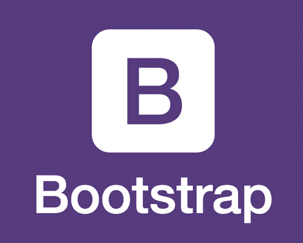

Description
A massive online multiplayer game built using JavaScript for Teknack 2018. Explore the isles of the world, buy islands and ships to gather and trade resources to become the ultimate Lord of the Isles.
Features
- More than 20,000 islands to explore.
- Dice roll feature to land on any random island in the world.
- Buy new islands using gold coins.
- Buy new ships using gold coins.
- Trade resources with other players using your ships to earn gold coins.
- Collect penalty from players landing on your island.
- View a log of all events that happened when you were online as well as offline.



Role & Contribution
I was one of the two developers who developed the game. Following are the features that I had contributed in the game:
- The user interface of the game.
- Dice roll feature to land on any random island in the world.
- Buy new islands using gold coins.
- View a log of all events that happened when you were online as well as offline.
Learning Experience
The technologies that I used for building Lords of the Isles were not new for me. However, due to the scale of the game and due to the async nature of Node.js we faced issues. Multiple layers playing the game at the same time combined with the async nature created issues in database entries and affected the progress of some players.
Another important lesson that we learned is that no matter how much of a great product you build, it is not going to be a success unless and until the users know how to use it. We were focusing too much on adding features and improving the UI and missed to add instructions and helps necessary at some places. The players did not understand how to play the game and hence the no. of gameplays was way less that what we expected.
Back
All logos, trademarks and registered trademarks are the property of their respective owners.